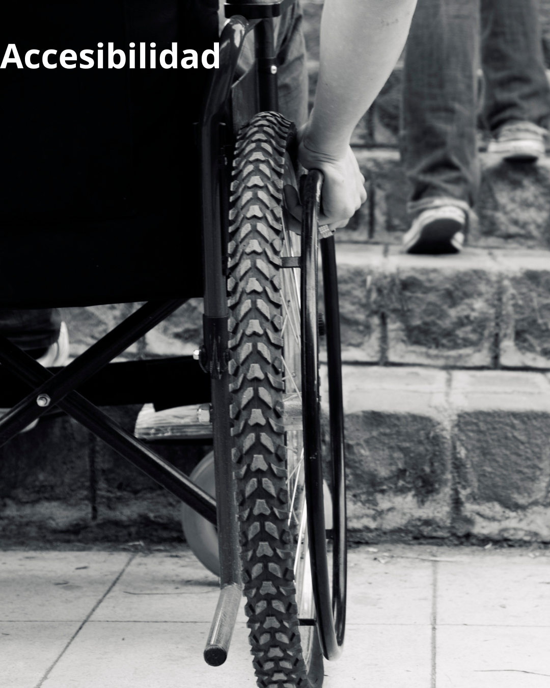

Accesibilidad
¿Qué es la Accesibilidad Digital?
La accesibilidad digital es el diseño y desarrollo de productos digitales que puedan ser utilizados por todas las personas, independientemente de sus capacidades físicas, cognitivas o sensoriales. No se trata solo de cumplir con normativas, sino de crear experiencias digitales verdaderamente inclusivas que permitan a cada usuario participar plenamente en la era digital.

¿Por qué la Inclusión Digital es Fundamental?
Porque garantiza que nadie quede afuera. En un mundo cada vez más digitalizado, la accesibilidad es un derecho, no un lujo. Construir entornos virtuales accesibles es construir una sociedad más justa y participativa para todas las personas.
Beneficios Universales
- Mejora la experiencia de usuario para personas mayores
- Facilita la navegación en condiciones adversas (ruido, poca luz)
- Optimiza el rendimiento en dispositivos con conectividad limitada
- Aumenta la usabilidad para usuarios con diferentes niveles de experiencia tecnológica